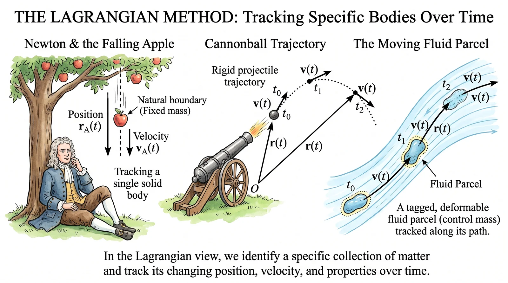
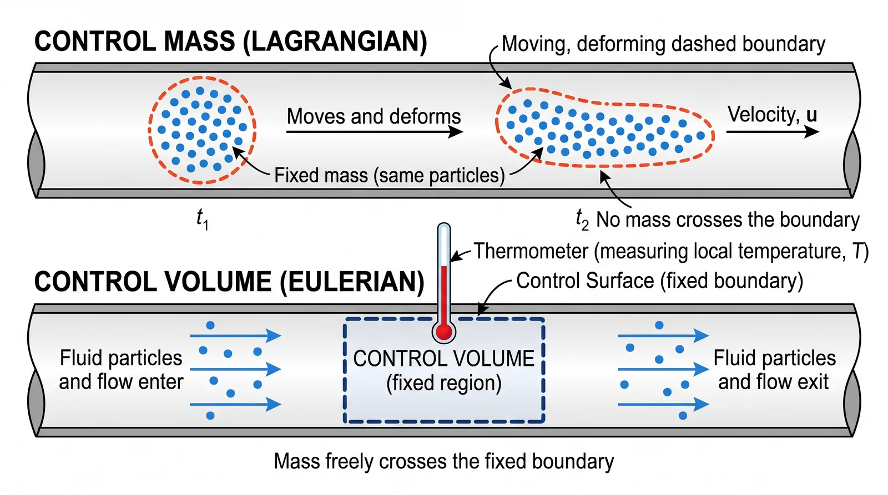

Two ways to observe a flowing fluid
At the end of Chapter 1, we left Isaac Newton’s orchard with a powerful new tool: the continuum hypothesis. By zooming out from individual molecules to the Representative Elementary Volume (REV), we defined the optimum size for an imaginary fluid parcel—one small enough that density, velocity, pressure, and temperature are effectively uniform across it, yet large enough to average out molecular fluctuations so those properties vary smoothly.
Now that we know the right size for our fluid parcel, how do we actually observe it in motion and apply the fundamental laws of physics? At first glance, the answer seems straightforward. Just as Newton watched the falling apple and applied his second law of motion () to it, we can try to watch a single water parcel as it moves.
The most natural starting point is to treat our fluid parcel the exact same way Newton treated the apple. We pick one specific parcel, tag it, follow it wherever it travels through space and time, and observe how forces change its motion. In mechanics, this way of observing motion is called the Lagrangian method, named after the eighteenth-century mathematician Joseph-Louis Lagrange.
Throughout classical physics, the Lagrangian approach is the method we rely on most. Whether we are predicting the trajectory of a cannonball, the swing of a pendulum, or the orbit of a planet, we identify a distinct body of matter and track its position, velocity, and temperature as time progresses.

The water balloon in the pipe: a control mass
Tracking a bare parcel of water inside a rushing stream is tricky, so let us start with a simpler thought experiment. Return to the pipe from Chapter 1 and imagine water flowing steadily from a cold room into a warm room. Inside the pipe, picture a tiny, ultra-thin, flexible water balloon sized to our Representative Elementary Volume (REV), filled with the exact same water and carried effortlessly along with the flow.
As the water balloon travels from the cold section into the warm section, the water inside it heats up and expands. Its volume changes, and its shape stretches as it squeezes through bends in the pipe, yet the mass of water trapped inside the rubber skin remains strictly constant.
In mechanics and thermodynamics, a fixed, identifiable collection of matter like the water inside this balloon is called a control mass (or closed system), enclosed by a moving material boundary. Just like Newton’s solid apple, our water balloon has a fixed mass. As long as its boundary keeps the exact same fluid molecules together, applying classical physics is straightforward: we ride along with the balloon and record how its temperature, volume, and velocity change over time. Hence in the Lagrangian approach we are using control mass.
The Lagrangian derivative and the laws of physics
Because we are riding along with a specific moving parcel of matter, the rate at which any fluid property (such as velocity, density, or temperature) changes as we follow that parcel is given a special symbol:
This operator is called the material derivative. Because it tracks changes following a specific parcel of fluid, it is also known as the substantial derivative, particle derivative, or Lagrangian derivative.
This perspective is crucial for one profound reason: the fundamental laws of classical mechanics and thermodynamics are inherently Lagrangian.
Conservation of mass states that the mass of a specific, identifiable collection of matter does not change over time ( ).
Newton’s second law of motion states that the net force acting on a specific body of matter equals its mass times the rate of change of its velocity ().
Conservation of energy (the first law of thermodynamics) tracks the heat added to and the work done by a specific collection of matter as it moves.
Where the Lagrangian method runs into trouble
For a solid apple—or water sealed inside a rubber balloon—a real physical boundary holds the object together. What happens when we strip away the rubber skin of the balloon and try to follow a real fluid parcel bounded only by our imagination?
Suppose that we inject a tiny cube of red dye into the water so we can watch a single parcel travel down the pipe. Within seconds, the trouble begins. Unlike a rigid solid, a moving fluid continuously deforms. Friction near the pipe walls slows the outer layers while the core rushes ahead, stretching our neat cube into a long, thin ribbon. When the flow encounters a valve, a bend, or a turbulent eddy, the parcel twists, folds, splits into delicate filaments, and mixes with its neighbours.
Before long, our original “water apple” is smeared across a huge stretch of the pipe. Trying to track its distorted boundary, calculate the forces acting on its tangled surface, and simultaneously follow millions of other parcels becomes practically impossible for solving general flow fields. If fluid mechanics relied solely on chasing individual parcels, our story would end right here.
The Eulerian view: watching from fixed stations
Fortunately, there is a second way to observe a flow, developed by the eighteenth-century Swiss mathematician Leonhard Euler.
Instead of jumping into a kayak to chase a single parcel of water down a river, imagine standing still on a bridge and looking straight down at a fixed patch of water beneath you. You no longer care which specific water parcel is passing under the bridge at any given second; you simply record the velocity, pressure, density, and temperature of whatever fluid happens to occupy that fixed spot in space at that time.
This is the Eulerian method. Rather than tracking moving parcels, we define fixed coordinates in space and describe the flow as continuous fields—velocity , pressure , and temperature .
To see the Eulerian view in everyday life, think of a weather map showing temperatures in the capital cities of some Indian states.
Weather stations do not float away inside moving balloons of air to see where that air goes. They remain fixed to the ground at specific locations and record how the temperature changes with time as different air parcels blow past. Because we are measuring how a property changes with time at a fixed point in space, the rate of change recorded by that stationary sensor is written as a partial derivative with respect to time:
In fluid mechanics, this is called the local derivative (or the Eulerian time derivative / field derivative).
Instead of following a moving control mass as in the Lagrangian approach, the Eulerian observer draws an imaginary, fixed box in space—such as a specific section of a pipe or a grid cell over a city—and watches fluid flow in and out of it. These fixed points or regions in space are called control volumes, and their imaginary boundaries, through which mass, momentum, and energy freely cross, are called control surfaces.

In experiments and engineering, the Eulerian view is a lifesaver:
Weather stations bolted to the ground measure wind speed, pressure, and temperature at a fixed latitude and longitude.
Pressure gauges and flow meters tapped into the wall of a pipe read fluid properties at fixed points along the line.
Numerical ocean and atmospheric models divide the globe into fixed grid cells and compute how velocity, temperature, and pressure evolve inside each cell.
The grand dilemma
Here, however, we run headfirst into the central paradox of fluid mechanics:
Our observations and measurements are Eulerian: we want to measure and compute fluid fields at fixed points inside a control volume.
Our fundamental laws of physics are Lagrangian: Newton’s second law () and the laws of thermodynamics apply to a moving parcel of fixed mass (a control mass), not to an empty geometric box in space!
How can we apply Lagrangian laws of physics to Eulerian observations without chasing individual fluid parcels down the pipe? We need a mathematical translator, a bridge that connects the rate of change experienced by a moving fluid parcel () to both the local rate of change measured at a fixed point () and the way fluid properties vary across space.
Building that bridge is the story of Chapter 3.
Key idea to remember
The Lagrangian view follows a moving fluid parcel of fixed mass (a control mass), which is where the fundamental laws of physics naturally live; the Eulerian view watches fluid flow through fixed points in space (a control volume), which is how we practically measure and model flows.